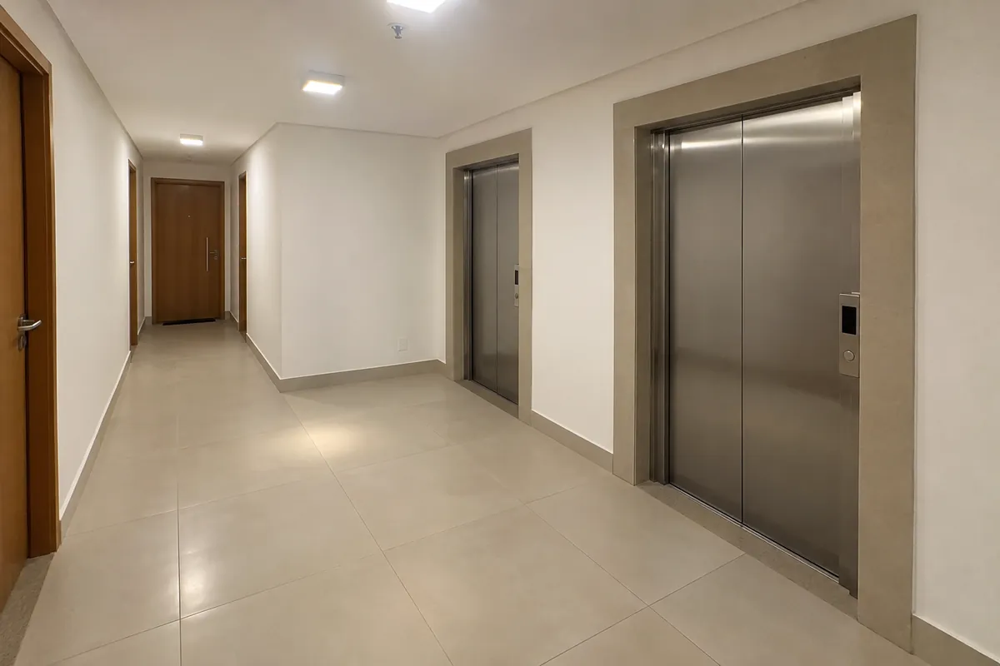
Construtoras e engenheiros
O imóvel pronto para a vistoria e a entrega das chaves ao cliente final, com a limpeza planejada junto com o cronograma da obra e acabamento sem retrabalho.
Especialidade da Trívia Clean
Uma limpeza técnica e intensiva, voltada para remover os resíduos da obra e deixar o imóvel pronto para uso, com segurança e acabamento impecável.
4,9 Nota no Google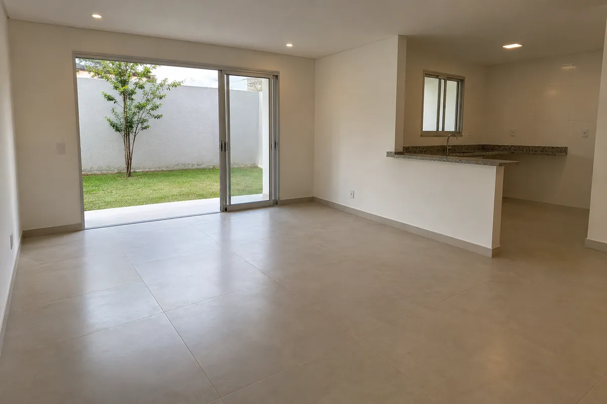
Pós-obra é especialidade Apartamentos, escritórios e residências.
Para quem é
Do apartamento recém-entregue pela construtora à casa que acabou de passar por uma reforma: cada pós-obra tem a sua necessidade, e o planejamento acompanha cada uma.

O imóvel pronto para a vistoria e a entrega das chaves ao cliente final, com a limpeza planejada junto com o cronograma da obra e acabamento sem retrabalho.
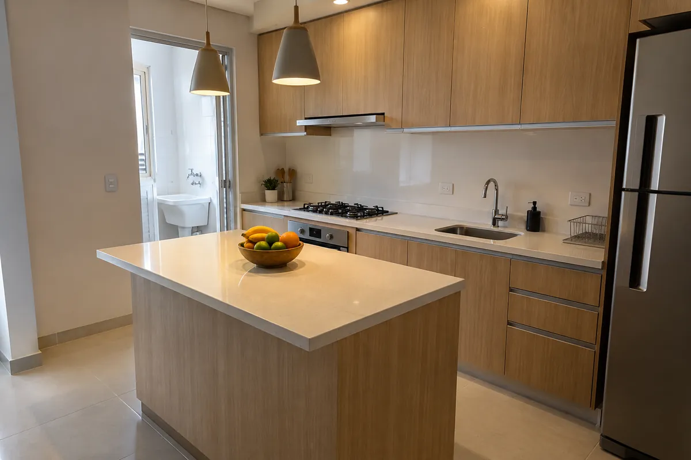
O projeto pronto para fotografar e entregar ao cliente, com cada superfície limpa com o produto certo.
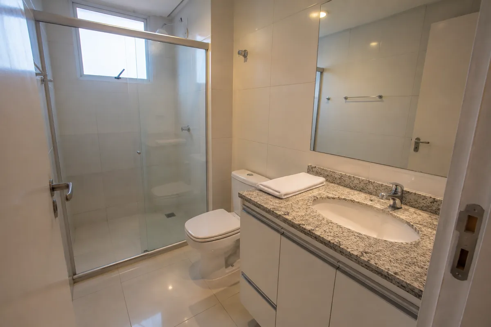
Volte para casa sem o pó da obra: limpeza técnica de todos os ambientes depois da reforma, para você só se preocupar com a mudança.
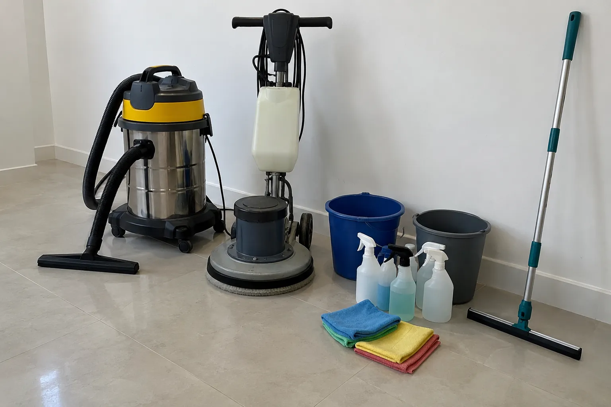
O que inclui
Cada superfície recebe o produto e o equipamento certos, sem danificar o acabamento novo.
Atenção aos detalhes
É nos detalhes que o pós-obra aparece: o vidro sem marcas, o trilho da janela sem poeira, o rejunte limpo e o metal brilhando.
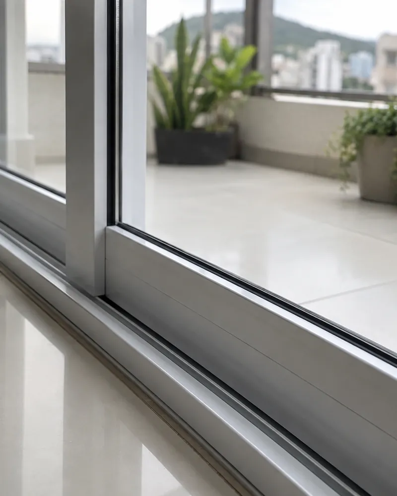
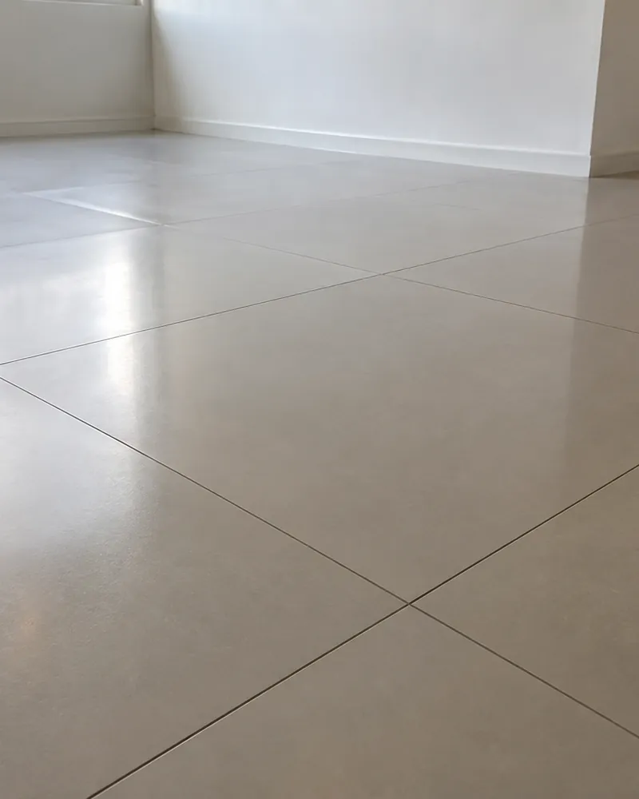
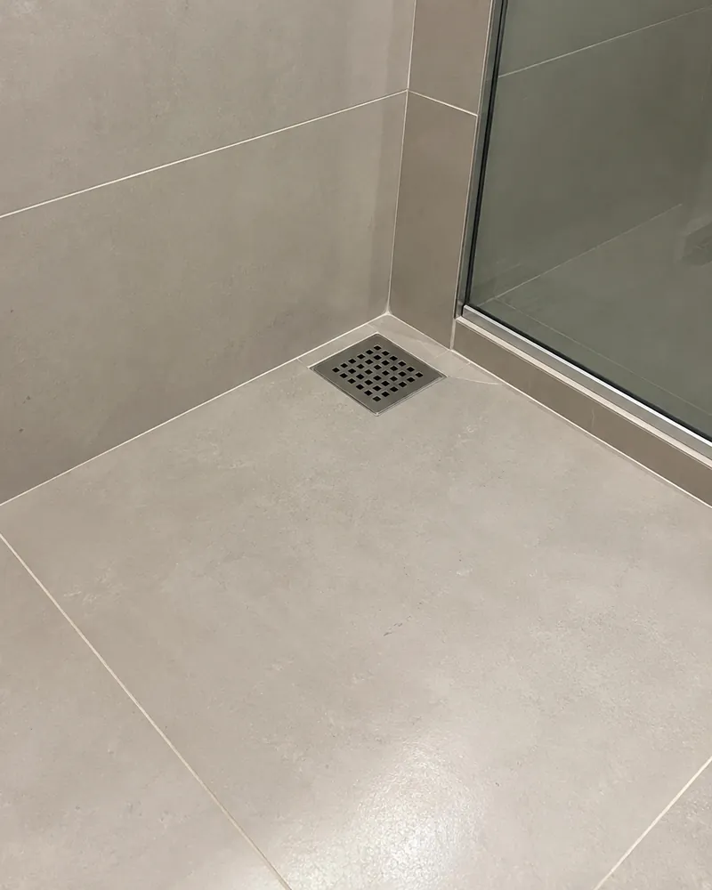
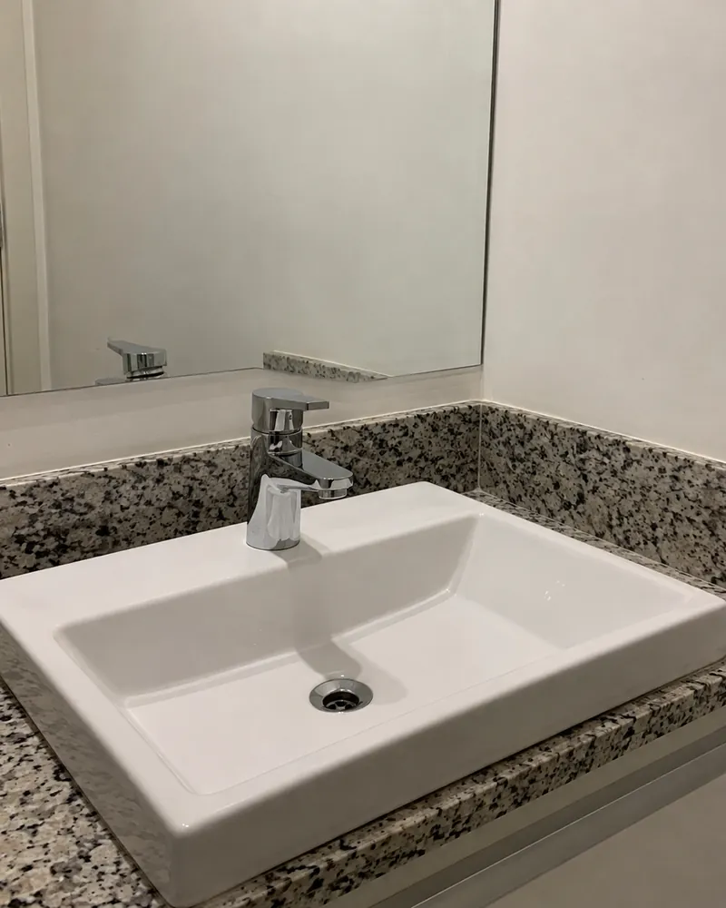
Como funciona
Atendimento personalizado e planejamento conforme a necessidade de cada obra.
Você conta o tipo de imóvel, a metragem, a fase da obra e a data desejada.
Equipe, produtos e equipamentos definidos para cada superfície, na data combinada.
Remoção dos resíduos da obra, da argamassa e dos respingos de tinta, e limpeza de vidros, esquadrias, pisos e revestimentos.
Serviço monitorado do início ao fim e o imóvel entregue pronto para uso.
Antes e depois
Arraste a divisória para comparar.
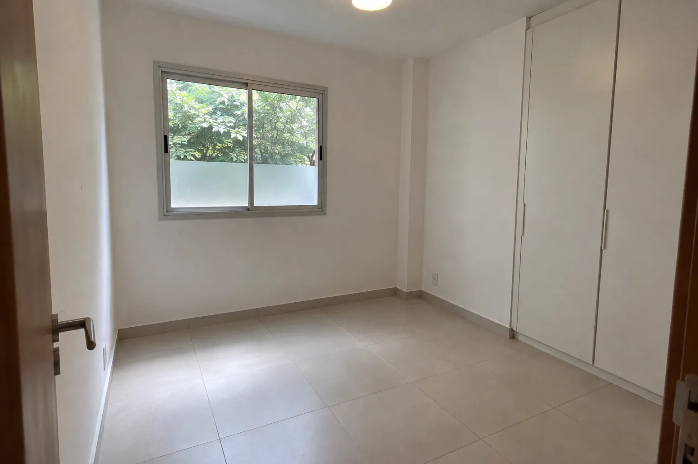
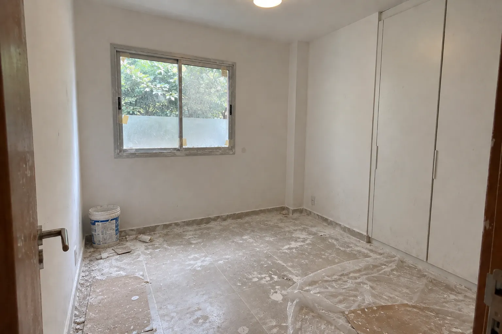
Perguntas frequentes
Não encontrou a sua? Fale com a gente pelo WhatsApp.
Falar no WhatsAppSim. A limpeza pós-obra inclui a retirada de argamassa e rejunte e a remoção de respingos de tinta, além da limpeza de vidros, esquadrias, pisos e revestimentos.
Ao fim da obra ou da reforma, depois que os serviços de pintura e instalação terminarem e antes da mudança ou da entrega do imóvel ao cliente.
Depende da metragem e da fase da obra. Um apartamento de 100 m² costuma ficar pronto em 1 a 2 dias.
A Trívia Clean trabalha com produtos profissionais e hipoalergênicos e equipamentos adequados para cada superfície. A equipe leva tudo: o imóvel só precisa estar com água e energia ligadas.
Atendemos apartamentos, escritórios e residências. Para construtoras, fazemos várias unidades de um mesmo prédio, com emissão de nota fiscal.
Serra, Vitória e Vila Velha, na Grande Vitória (ES).
Pelo formulário logo abaixo ou pelo WhatsApp. Conte o tipo de imóvel, a metragem aproximada, a cidade e a data desejada. Para imóveis maiores, agendamos uma visita técnica antes de fechar o orçamento.